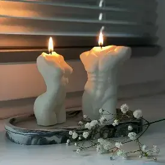
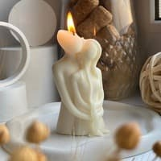
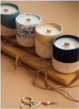

Создайте себе уют и гармониию!
Наша экологически чистая и качественная продукцие из 100% натурального соевого воска обеспечит Вам комфорт и уют, зарядит положительной энергией в активное времяпровождение.
О нас
Создатель и вдохновитель идеи данного бренда всегда заинтересован в изготовлении разнообразных вещей для дома. Постоянные эксперементы с различными материалами и инструментами, привели к изготовлению свечей уникальных форм и типичности.
Сосновый воск производится из соевых бобов, выращиваемых в Дании, и этот вид воска является экологически чистым и безопасным для здоровья.
-
Красота в моменте
-

Создать для себя и окружающих уют в атмосфере
-

Изготовлено с любовью
Наши товары
Материалы применяемые в производстве: соевый воск, восковые красители, высококачественные ароматические масла и шнурок фитиль из качественного хлопка.
Оттенки и формы свечей разнообразны, со своей оригинальностью и гармоничностью сочетаются с ароматом, создавая незабываемую атмосферу в вашем доме.
15$
"Силуэт любви"
Запах: нежный аромат груши и персика. Для чего: для атмосферы романтической
19$
"Буря вишнёвого сада"
Запах: нежный аромат цветущей вишни. Для чего: для энергии и свежести в доме.
12$
"Свеча настроения"
Запах: свежий и стойкий аромат лайма. Для чего: для душевного равновесия.
18$
"Бесконечное очарование"
Запах: нежный аромат лаванды и фрезий. Для чего: для уюта и комфорта.
Как создать декоративную свечу
Создание свечи из соевого воска может состоять из следующих этапов:
-
Подготовка материалов: мелкие фрагменты соевого воска, фитиль для свечи, ароматизаторы, красители и другие дополнительные материалы.

-
Подготовка формы: выбор формы для свечи и подготовка ее к наполнению воском.

-

Приготовление воска: расплавление соевого воска в плавильном устройстве до нужной температуры. Сложение ароматизаторов красителей по мере необходимости.
-

Подготовка фитиля: вставьте фитиль в форму и зафиксируйте его так, чтобы он был равномерно напряжен.
-
Подготовка материалов: мелкие фрагменты соевого воска, фитиль для свечи, ароматизаторы, красители и другие дополнительные материалы.

-
Наполнение формы: воск налить до формы, пока она не заполнится полностью. Ждать, пока он затвердеет.

-

Приготовление воска: расплавление соевого воска в плавильном устройстве до нужной температуры. Сложение ароматизаторов красителей по мере необходимости.
-

Подготовка фитиля: вставьте фитиль в форму и зафиксируйте его так, чтобы он был равномерно напряжен.
-
Подготовка материалов: мелкие фрагменты соевого воска, фитиль для свечи, ароматизаторы, красители и другие дополнительные материалы.

-
Наполнение формы: воск налить до формы, пока она не заполнится полностью. Ждать, пока он затвердеет.

Курсы
Наши курсы позволяют сделать первый шаг в новой карьере или углубить знания в своей области, развиваться как профессионал, а также добиться успехов в любимом деле.
Изготовлениеи оригинальных свечей
Обучение - 15 часов
Цена за 1 час - 1.2$
Изготовлениеи свечей
Будем обучать основам изготовления свечей из разных материалов, различными способами и подручным инструментом.
Магическое свойство аромагии
Обучение - 25 часов
Цена за 1 час - 2$
Аромагия в вашем доме
Будем изучать искусство ароматерапии и изготовления свечей с различными ароматами.
Знакомимся с нашими коучерами
Эти специалисты разрабатывают для вас курсы, которые помогут вам начать свой собственный бизнес или хобби.
Каждый из них имеет большой опыт работы и в сложных для Вас моментах помогут и поддержат.
Преподаватель Илья
Имеет опыт преподавания и работы 4 года
Преподаватель Анна
Имеет опыт преподавания и работы 5 лет
Сео-Couch Татьяна
Обучение декорированию и презентациям

Маркетолог Юлия
Поможет с рекламой в продвижении
Отзывы клиентов
Наши покупатели имеют разный возраст, статус, занятия и интересы, но у них есть одна общая черта - они стремятся к гармонии и находят радость в маленьких радостях жизни, которые создают атмосферу уюта и гармонии в их доме.


Константин Пилипенин
Свеча выполнена в минималистическом стиле,нет ничего лишнего ,что бы «раздражало» глаз. Выглядит очень сдержанно и дорого.
Конечно же первое на ,что мы обращаем внимание в магазине при выборе аромасвечи-это дизайн!Если глазу «нравится»,то мы останавливаемся ,начинаем слушать аромат и представлять подойдет ли он для нашего дома или нужно искать что-то другое?!
В этом случае случилось БИНГО!И дизайн ,и аромат просто сумасшедшие.
Я точно закажу еще свечей от этого сайта!
Генадий Волков
Всегда интересовался такими свечами, многое слышал, а надежд возлагал на них видимо еще больше. Свечи - это всегда очень красиво и романтично, именно ароматизированные свечи способны создать особую атмосферу.
Эта свеча наполняет своим ароматом целую комнату, нежным и приятным. В комнату заходишь и пахнет просто отлично!👍 И ее для этого даже зажигать не нужно.
Такая свеча станет отличным дополнением любого интерьера.
Запахи в процессе горения я не чувствовалл. Мне очень нравится!
Алевтина Соколова
Привет!
Огонь - всегда вызывает чувство прекрасного!!! А вот свечи - способны передать комфорт, спокойствие и нежность. Сейчас рынок - пестрит огромным колличеством различного ассортимента. Тут можно обратить внимание - на форму, наполнение и конечно же наличие аромата. Мне всегда нравился аромат свежести, ну или цветов. Но в одно мгновение, я познакомилась с ней:
Должна сказать, что я не очень люблю аромат ванили, и считаю его удушливым особенно в плане парфюмерии. Мне всегда сложно слышать на людях эту сладость, которая кажется монотонной и непроходящей. Сложно ощущать себя на одном и том же моменте.
Крестина Солдес
Изысканная свеча оригинального дизайна изготовлена вручную и декорирована просто СУППЕР!!!. Она придает интерьеру особый уют и привлекательность. Аромат кофе повышает устойчивость к стрессам, улучшает самочувствие, бодрит, стимулирует мозговую активность. Такая свеча подходит в качестве подарка, украшения интерьера, оформления праздничного стола. Время горения составляет до 15 часов.
Сертификаты качества
Сертификаты обеспечивают дополнительное доверие и уверенность для наших клиентов.

Частые вопросы
- Ваниль - сладкий, глубокий цветочный запах с зелеными, восковыми и фруктовыми нюансами. Запах ванили в парфюмерии отличается от знакомого всем приторно-сладкого ванилина. Ее настоящий аромат слегка пряный, амбровый, дымный, напоминающий густой ликер. При описании запаха ванили можно сказать, что он теплый, обволакивающий, с приятным сладковато-горьким послевкусием.
- Лаванда - сильный пряный запах и пряно-терпкий вкус. Из-за сильного аромата лаванду добавляют лишь в небольшом колличестве как ароматизатор в свечи.
- Грейпфрукт - нежный, бодрящий, чуть сладковатый, со свежей цитрусовой нотой. свежий, чуть горьковатый, бодрящий. Запах грейпфрута похож на запах лимона и апельсина с характерной терпкостью.
- Кедр - запах у него хвойный смолянистый либо сухой древесный. Аромат кедра техасского придает духам дымность, легкую сладость, терпкость и загадочный бальзамический оттенок. У виргинского кедра запах более теплый и амбровый, с нотами прогретой на солнце коры.
- Яблоко в сочетании с корицей - яблочные ноты имеют сладкий, фруктовый аромат с возможным кисло-зеленым оттенком. Ольфакторная группа: фруктовые. Положение в ольфакторной пирамиде: верхняя, средняя нота. Дополнительные сведения: нота яблока используется в свежих и фужерных композициях, а также в гурманских и фруктовых. Она добавляет свежесть и объём за счёт прозрачной сладости и прохладной свежести.
- Безопасность Интерьерные решения не должны создавать вероятность возгорания. Вот почему важно приобрести также подсвечник или форму. Ни то, ни другое не должно быть деревянным или пластмассовым. Лучше всего брать безопасные металлические, бронзовые, стеклянные варианты. Если же свечу зажигать не планируется, и она будет служить исключительно декором, о возгорании можно не беспокоиться.
- Назначение Декоративные варианты могут использоваться по-разному. Одни зажигают их во время банных процедур, другие украшают ими полку над камином. Именно поэтому дизайн должен отвечать назначению. Для ванной лучше взять толстые цилиндры, для гостиной – тонкие витые или изделия необычных форм, для кухни же подойдут модели с кофе или кусочками сухих фруктов.
- Соответствие интерьеру. Оптимально, если свеча по своей стилистике соответствует дизайну комнаты. Например, классическим интерьерам подойдут белые, золотистые решения, скандинавским – изделия с травами или мешковиной, минимализму – толстые модели акцентных оттенков.
- Качество При покупке отдавайте предпочтение производителю, который давно зарекомендовал себя с лучшей стороны.
- Материал Разумеется, самыми полезными являются восковые решения. Не нанесут вреда стеариновые изделия, как и гелевые. Гель горит дольше всего, а еще такая свеча не оплывает. Худший выбор – парафин, однако если вы зажжете свечу на 20-30 минут и потом проветрите помещение, вреда от него не будет.
-
Имеются в продаже классические формы свечек:
- 🕯
цилиндр
, такие решения наиболее часто продаются в магазинах бытовых товаров, товаров для декора дома; - 🕯
конус (пирамидка)
, отличный вариант ароматизированной свечки; - 🕯
геометрия
, это формы типа шара, трапеции, овала, при правильном применении будут уместны в любой обстановке; - 🕯
фигурные
, здесь речь идет о разных фигурах: ангелочки, сердечки, птицы, животные....
- 🕯
-
При изготавлении свечных изделий своими руками, многие используют:
- 🕯 кружево;
- 🕯 мешковину и джут;
- 🕯 разнообразные ткани;
- 🕯 пуговицы;
- 🕯 стразы;
- 🕯 бусины;
- 🕯 ленточки;
- 🕯 природные материалы
-
Очень популярными являются варианты дизайна свечей, изготовленных в единственном экземпляре.
- 🕯 С лавандой. Ароматная модель, дополненная эфирным маслом лаванды и веточками этого растения, станет отличным дополнением ванной комнаты.
- 🕯 С кофе. Свечи, отдекорированные кофейными зернами, в последнее время находятся на пике популярности. Они не только более чем уместны на кухне, но еще и издают потрясающий аромат при горении.
- 🕯 С блестками. Изделия, осыпанные блестками, красиво дополнят любую обстановку. При этом цвет блесток может и не совпадать с оттенком свечи.
- 🕯 Разноцветные. Модели, напоминающие светофор или радугу, подойдут тем, кто никак не может определиться с оттенком свечи. Делаются изделия просто: материал идет слоями, каждый слой имеет свой оттенок.
- 🕯 Нестандартных форм. Формы можно придумать самостоятельно, а можно купить в магазине. Среди наиболее интересных следует отметить свечу-яйцо, металлическую свечку-тень, лампочку, модели, похожие на бумажные кораблики, идеи с жестами.
- 🕯 В технике декупаж. Сегодня в магазинах для творчества можно купить множество рисунков и использовать их для декупажа свечей. Изображения могут быть любыми: как выбранными по настроению, так и предназначающимися для какого-либо праздника.
-
Помимо формы и дизайна декоративные свечи для дома могут иметь различный оттенок:
- 🕯 Белый. Это один из самых популярных тонов. Белые модели красиво смотрятся в разных ситуациях и могут иметь любое исполнение.
- 🕯 Зеленый. Расслабляющий, природный оттенок. Такие свечи могут иметь легкий аромат яблока, весенних трав.
- 🕯 Синие, голубые. Подобные варианты выглядят свежо и эффектно. Подойдут для ванны, спальной комнаты.
- 🕯 Красные. Объемные решения красного цвета будут уместны в спальне молодоженов. Еще они замечательно будут смотреться в минималистичных стилях, особенно японском минимализме.
- 🕯 Черные. Такие модели не слишком востребованы, но они тоже могут дополнить минималистичные направления. Зачастую черные изделия покрывают золотистыми или серебристыми рунами, знаками, вензелями, иероглифами.
- 🕯 Фиолетовые. Глубокий фиолетовый тон любим мечтателями, философами. Он придаст помещению некую тайну, загадку.
- 🕯 Розовые. Такие свечи подойдут для спальни юной девушки, а также для ванной комнаты в розовых оттенках.
- 🕯 Серебряные и золотые. Оттенят классические стили интерьера, станут удачным дополнением к новогодним праздникам.
Каждый день недели соответствует определенному цвету свечи:
- Понедельник управляется Луной, этот день подходит для ритуалов на улаживание конфликтов, примирение после ссор, для здоровья. Зажигать следует в понедельник белую свечу или серебряную свечу.
- Вторник Планета-управитель этого дня – Марс. Воинственному божеству, провоцирующему разрушение и гнев и в то же время мотивирующему на мужество и смелость, соответствует красный цвет. Красная свеча помогает в разрушении злых чар, она предназначена для ритуалов на избавление от врагов и устранение препятствий.
- Среде соответствуют пурпурные и оранжевые свечи. Планета–управитель этого дня – Меркурий, покровитель общения, торговых коммуникаций и знаний. Среда предназначена для практик, направленных развитие общественных коммуникаций, бизнеса, активации талантов, трудоустройство.
- Четверг - день Юпитера, планеты социального успеха, славы, процветания и высокого положения. Цвета, соответствующие четвергу – синий и голубой. Синяя свеча благоприятно повлияет на успех в карьере и личностный рост. Голубая свеча привлекает благосклонность судьбы.
- Пятница - день Венеры, самой яркой звезды на небе. Венера – это богиня любви, удовольствий и красоты. Планета способствует привлечению в жизнь человека романтических отношений и появлению новых друзей. Пятнице соответствует зеленый цвет. Зеленая свеча притягивает любовь, помогает в улучшении здоровья, повышает женскую сексуальность и личную привлекательность.
- Суббота -день Сатурна, планеты строгой дисциплины, самопожертвования и самоограничений, направленных на исправление кармических долгов и саморазвитие. Цвета Сатурна – коричневый и черный. В ритуалах на разрушение препятствий и устранение врагов рекомендуется применять черную свечу или коричневую свечу.
- Воскресенье управляется Солнцем. Седьмой день недели считается самым подходящим для обрядов, направленных на развитие личности, карьерный рост, увеличение благосостояния. Ритуалы на привлекательность, хорошие результаты в учебе, обретение удачи тоже можно проводить в Воскресенье. Лучшие цвета этого дня – желтый, золотой, оранжевый.
Приобретая наслаждайтесь красотой
В каталог